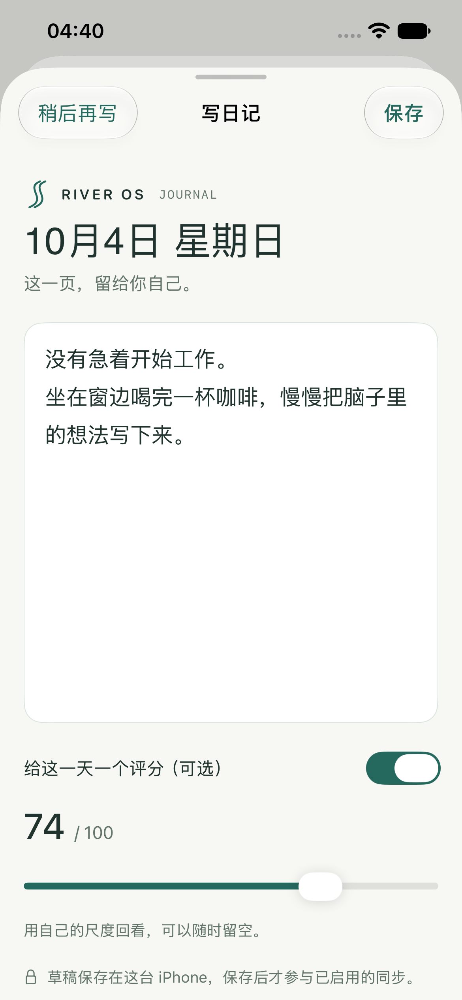
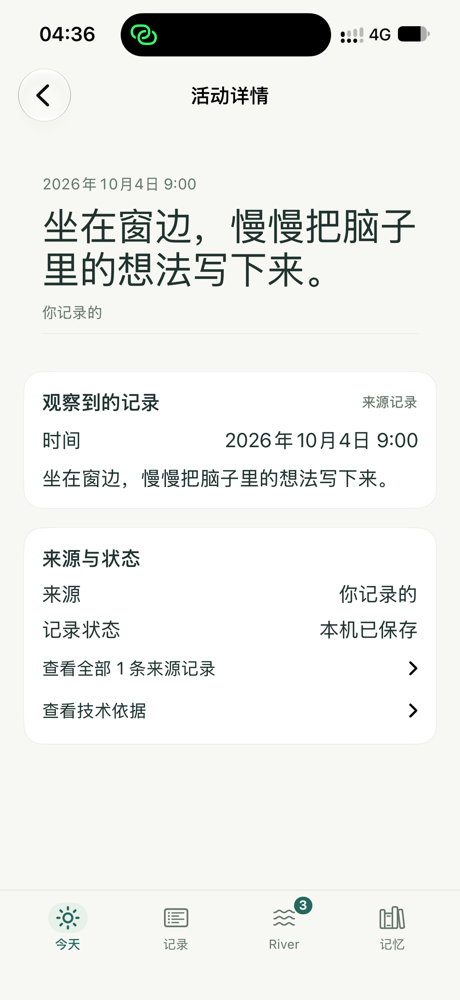
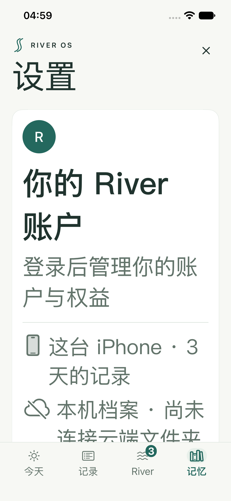
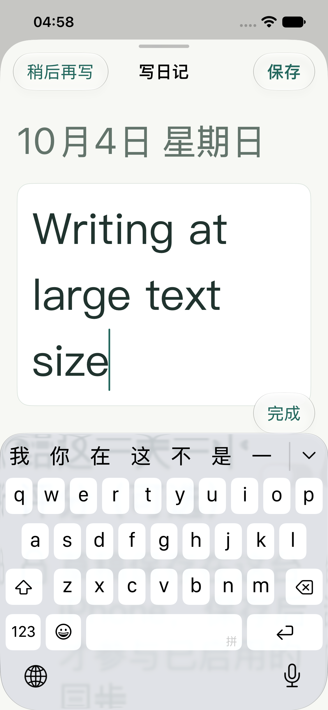

重构后的实际运行界面。账号、日常、记录、理解和记忆共用一套品牌与交互语言。所有内容均来自独立 QA 环境的隔离测试资料。




 今天iPhone 14 Pro 真机
今天iPhone 14 Pro 真机 记录时间线与查找
记录时间线与查找 River有资料范围的理解层
River有资料范围的理解层 记忆分类与检索
记忆分类与检索 系统设置身份与记忆连接
系统设置身份与记忆连接 写作共享编辑器
写作共享编辑器